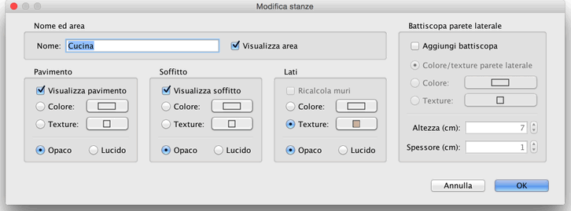

| Modificare le stanze | |||
|
Puoi modificare la posizione delle stanze della casa con il
mouse, dopo averle selezionate nella piantina della casa. Quando una stanza è selezionata nella piantina, puoi muovere uno di questi punti, con gli indicatori dei punti che appaiono su ogni punto della stanza selezionata. Puoi inoltre muovere il testo che visualizza il suo nome e quello che visualizza la sua area, se sono visibili.
|

|
|
Quando il puntatore del mouse è sopra uno di questi
indicatori, questo cambia per indicarti che puoi trascinare
questo punto o testo per muoverlo. Con il pulsante del mouse
premuto le linee guida e il magnetismo attivati nelle
intersezioni dei muri ti aiuteranno a trovare un angolo di
stanza o un'altra posizione. Il nome e gli attributi 3D di una stanza possono essere inoltre modificati grazie al suo pannello, che apparirà dopo un doppio click su di esso nella piantina della casa o scegliendo Piano > Modifica stanze... dopo averlo selezionato.  Nel pannello stanza, Puoi cambiare il nome della stanza
selezionata e scegliere se verranno visualizzati nella piantina. |
|